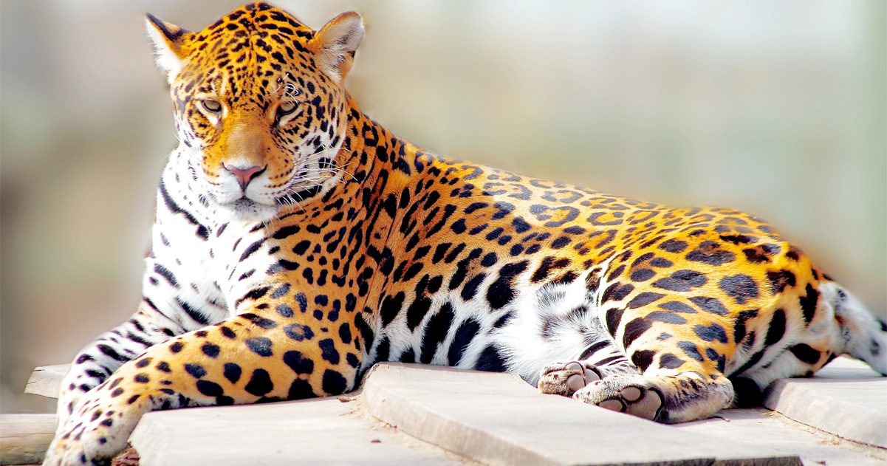
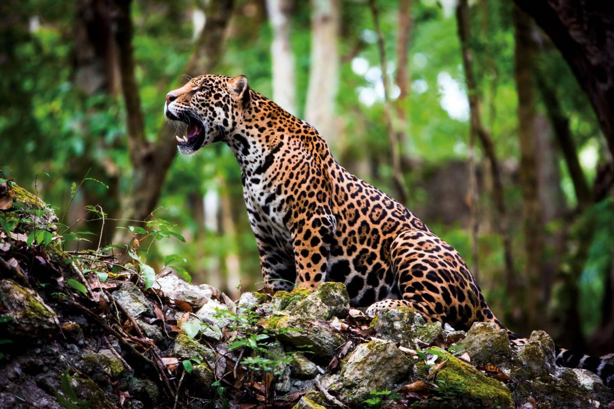
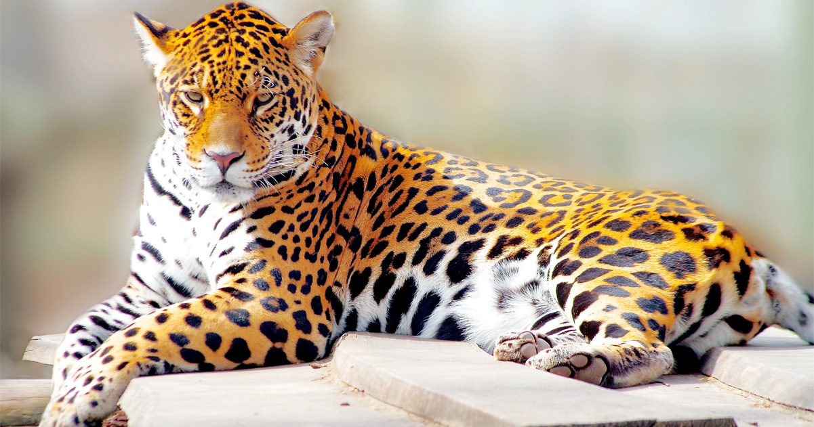
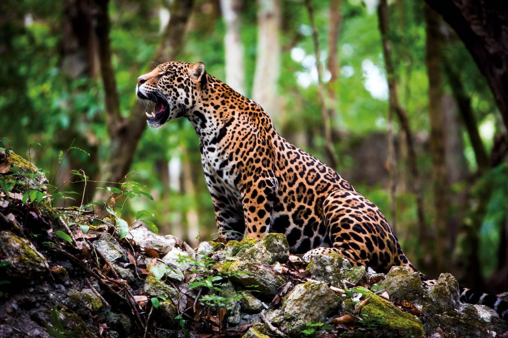

| Megnevezés | Súly | Átlag életkor | Illusztráció |
|---|---|---|---|
| Tigris | 90 és 300 kg | 10 - 15 év |  |
| Jaguár | 56 - 96 kg | 12 - 15 év |  |
| Leopárd | 23 - 31 kg | 12 - 17 év |  |
| Oroszlán | 130 - 190 kg | 8 - 16 év |  |
| Megnevezés | Súly | Átlag életkor | Illusztráció |
|---|---|---|---|
| Tigris | 90 és 300 kg | 10 - 15 év | |
| Jaguár | 56 - 96 kg | 12 - 15 év |  |
| Leopárd | 23 - 31 kg | 12 - 17 év |  |
| Oroszlán | 130 - 190 kg | 8 - 16 év | |